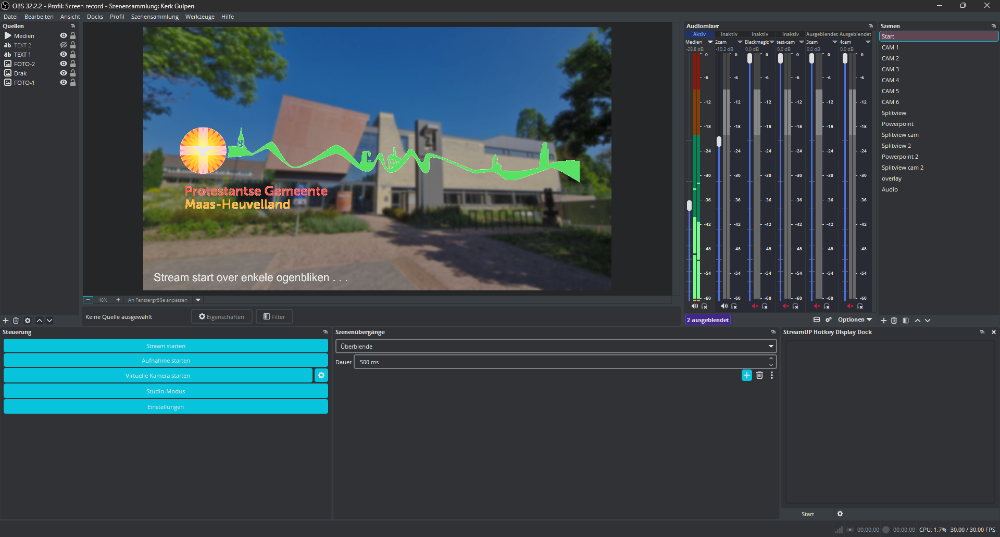

My name is Marwin Koster, and I am a passionate developer and engineer with a strong interest in technology and innovation. I have been actively involved in various projects, including producing livestreams for the Protestantse Gemeente Maas-Heuvelland (PGMH) and engaging in sports activities. My work focuses on creating efficient and effective solutions, leveraging my skills in software development, hardware engineering, and multimedia production.
Learn more about my development work
Since 2023, I have served as the Lead Stream Engineer and Camera Operator for Protestantse Gemeente Maas-Heuvelland, delivering broadcast-grade live coverage for the 't Gulperhoes sanctuary in Gulpen.
What began as a modest setup with a single webcam and a Chromebook quickly evolved through a drive to unlock the broadcast's true potential. Recognizing room for innovation, I set out to research, design, and engineer custom systems from the ground up. Over the years, this continuous development transformed our streams into a fully professional, multi-camera operation featuring custom remote audio pipelines, dynamic broadcast graphics, optimized for digital reach.

I have been a doing sports my whole life.
Learn more about my sports
Contact
Marwin Koster
marwin.n.koster+contact@gmail.com
Streaming Gulpen / Vaals
marwin.n.koster+youtube@gmail.com
Youtube channel PGMH
pgmh.heuvelland+youtube@gmail.com
Get in contact